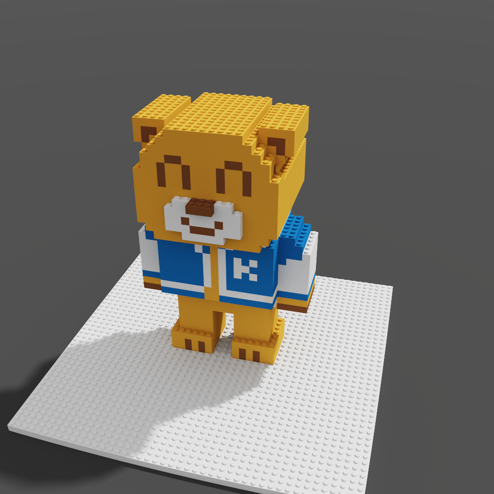
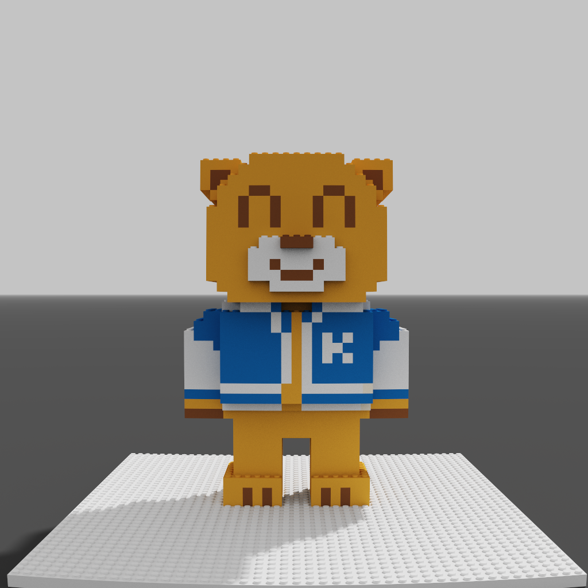
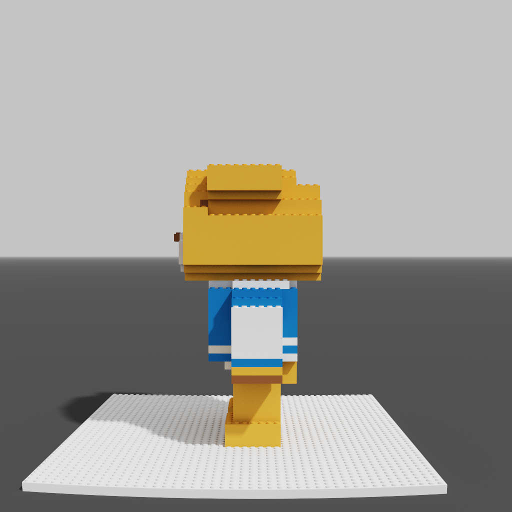
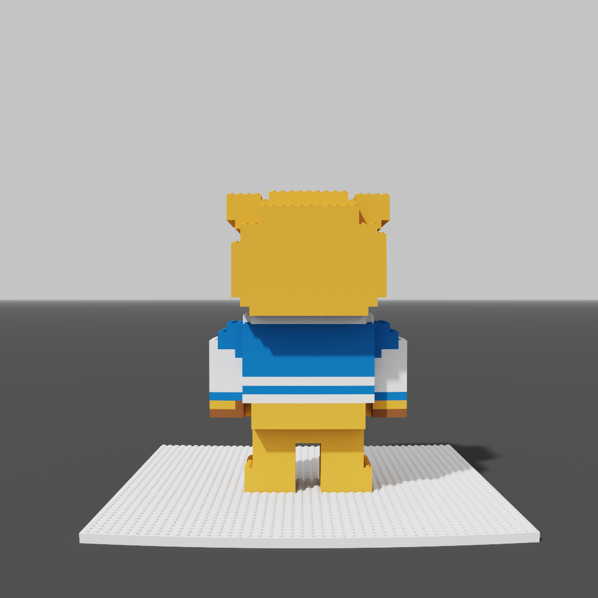
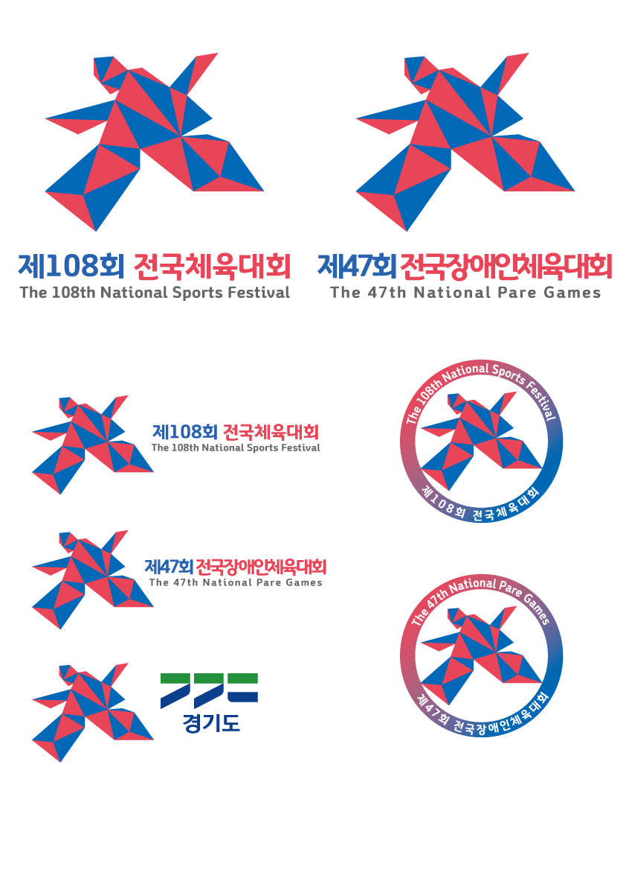
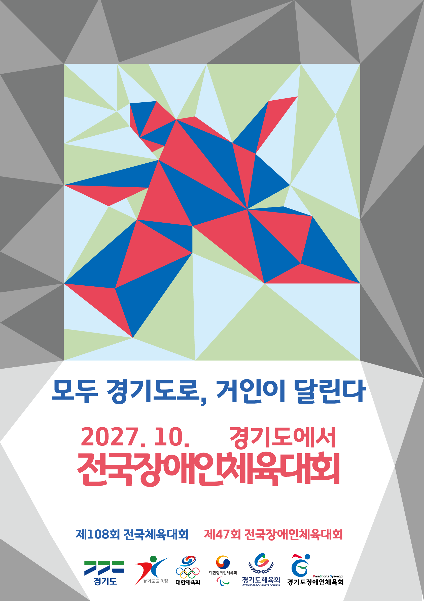
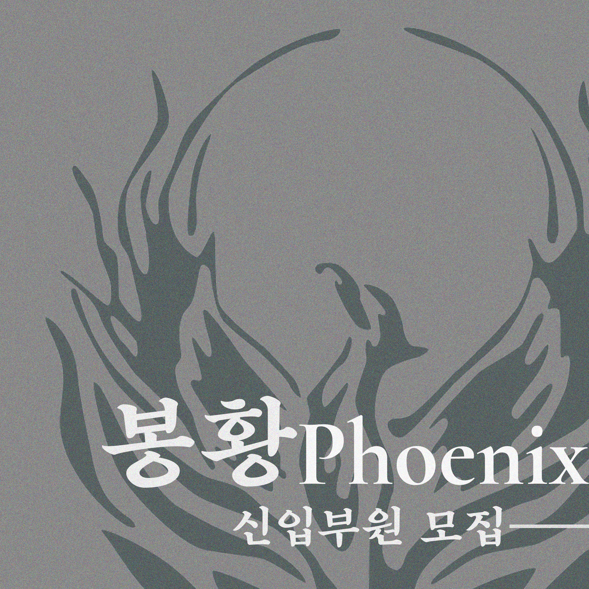
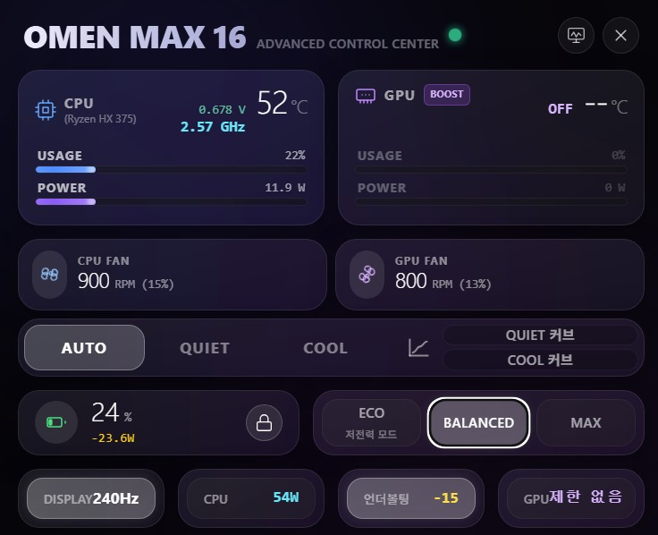

학교 마스코트 미니블록 디자인
3학년
학교의 마스코트 캐릭터를 활용하여, 입체적인 3D 미니블록 형태로 재구성 및 디자인한 결과물입니다. 다각도(앞, 뒤, 옆, 대각선)에서 조립 형태를 확인할 수 있도록 렌더링했습니다.




상업정보교육과 · 문헌정보교육과 복수전공
안녕하세요, 문태양입니다. 정보를 수집하고 분류하는 데서 그치지 않고, 그것을 기획안, 시각적 디자인, 또는 실용적인 도구로 구현해 내는 과정을 즐깁니다. 일상의 불편함을 줄이거나 사회에 긍정적인 가치를 더하는 일에 관심이 많습니다.
About
상업정보와 문헌정보학을 함께 배우며, "정보를 사람들에게 어떻게 더 유용하고 매력적으로 전달할 수 있을까"를 치열하게 고민하고 있습니다.
복잡한 문제를 분석하고 실현 가능한 아이디어로 풀어내는 것을 좋아합니다. 도서관 정책부터 지역 축제까지 공간과 사람을 잇는 기획을 시도하고 있습니다.
추상적인 아이디어를 포스터, 엠블럼 등의 시각 디자인으로 표현하거나, 일상에서 바로 쓸 수 있는 프로그램과 기기를 직접 만들어보며 기술을 익히고 있습니다.
Activities
관심사를 바탕으로 도전했던 공모전 기획과 다양한 시각 디자인, 그리고 하드웨어 제어 프로젝트 기록입니다.
3학년
학교의 마스코트 캐릭터를 활용하여, 입체적인 3D 미니블록 형태로 재구성 및 디자인한 결과물입니다. 다각도(앞, 뒤, 옆, 대각선)에서 조립 형태를 확인할 수 있도록 렌더링했습니다.




그래픽 디자인 공모
경기도에서 열리는 제108회 전국체육대회 및 제48회 전국장애인체육대회의 정체성을 담아낸 시각물 디자인 작업입니다. 양 대회의 통합 엠블럼과 공식 포스터를 직접 기획하고 구현했습니다.


그래픽 디자인 공모
제주도에서 개최되는 제107회 전국체육대회 및 제47회 전국장애인체육대회의 상징성을 담은 메달 디자인 작업입니다. 제주의 자연과 체전의 열정을 담아 메달의 앞면과 뒷면을 직접 기획하고 구현했습니다.


동아리 시각물 디자인
밴드부 '봉황 Phoenix'의 신입부원 모집을 위한 홍보용 이미지 타이포그래피 및 카드뉴스 컷을 디자인했습니다.

.png)
.png)
.png)
2학년 학교 공모전
재학생들이 실생활에서 사용하는 학교 체크카드의 그래픽 디자인을 기획했습니다. 학교의 상징적인 색상과 요소를 조합하여 가시성을 높였습니다.


그래픽 디자인
상업정보교육과(Business Finance Education) 학우들을 위한 단체복 등판 타이포그래피와 소매 로고를 디자인했습니다. (※ 디자인 내 '21'은 레이아웃 요소로 차용된 이름일 뿐, 특정 학번만을 위한 디자인은 아닙니다.)


정책 제안 공모
환경 문제와 도서관의 사회적 역할을 결합한 「순록: 순환하는 녹색 도서관」 정책을 기획했습니다. 다회용기 리필 거점과 기후변화 교육 전시관 등 세부적인 예산 편성과 공간 혁신안을 도출했습니다.
아이디어 기획 공모
상주시의 지역 특산물(상추, 돼지고기 등)과 상권을 연계한 「상주 쌈박 페스티벌」을 종합 기획했습니다. 순방문객 1만 5천 명 유치를 위한 핵심 콘텐츠 및 비축척 공간배치 개념도를 작성했습니다.
학술 연구 / OPEN-Qual 모형 개발
현대 도서관이 요구받는 물리적·기능적 복합화 요소를 체계적으로 진단하기 위해 온·오프라인 환경의 개방성, 이용자의 다층적 경험 및 잠재적 불만 요인을 진단하는 새로운 서비스 품질 평가 도구 'OPEN-Qual' 모형을 제안하고 설계했습니다.
C# / 하드웨어 모니터링
HP Omen 16 랩탑의 발열 및 소음을 효율적으로 제어하기 위해 BIOS 수준의 명령을 직접 호출하여 동작하는 전용 쿨링 소프트웨어를 개발했습니다.

아두이노 (ESP-32 Super mini)
네트워크 밖에서도 PC를 원격으로 켜고 관리하기 위해 ESP-32 Super mini 보드를 활용한 원격 부팅 하드웨어를 직접 구성했습니다. WOL 환경의 한계를 하드웨어적으로 극복했습니다.
아두이노 프로젝트
특정 좌석의 상태를 관리하고 모니터링하기 위한 펌웨어(Seat Manager)를 개발하고 코드를 기록했습니다.
개인 웹 프로젝트
복잡한 기능 없이 하루의 목표를 직관적으로 추가하고 완료를 체크할 수 있는 브라우저 기반의 가벼운 웹 도구(HTML/JS)를 제작했습니다.
개인 웹 프로젝트
사용자가 이름을 입력하고 원하는 글꼴과 모양을 선택하여 배경이 투명한 디지털 도장 이미지를 실시간으로 생성하고 다운로드할 수 있는 웹 도구(HTML/JS)를 제작했습니다.
Contact